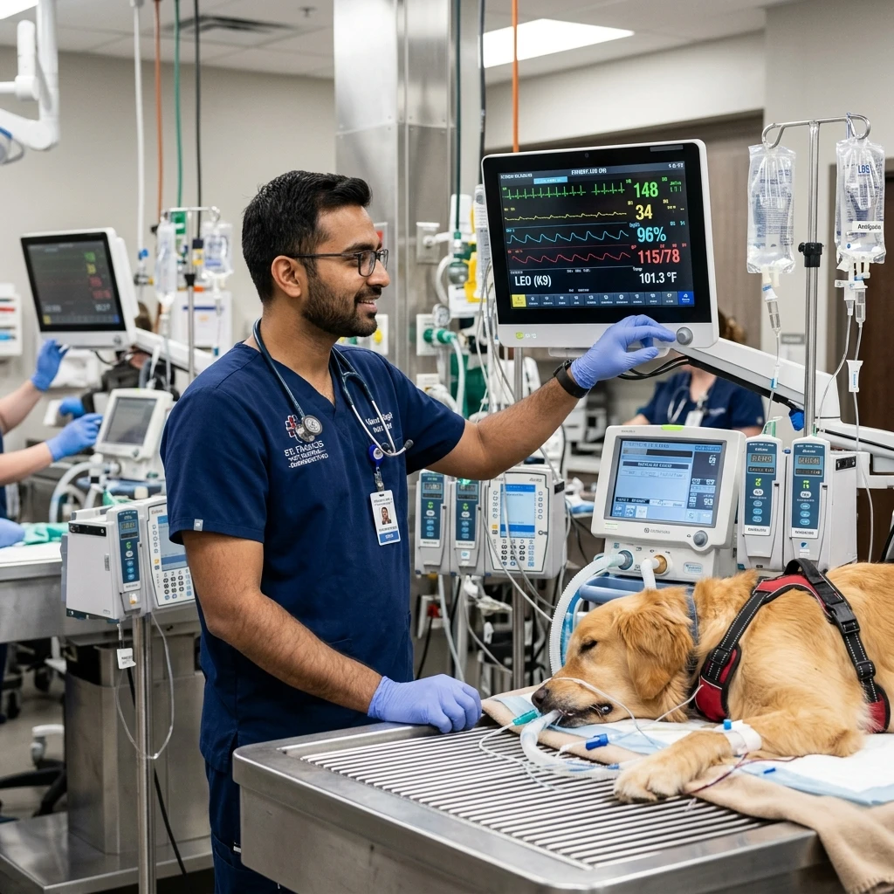
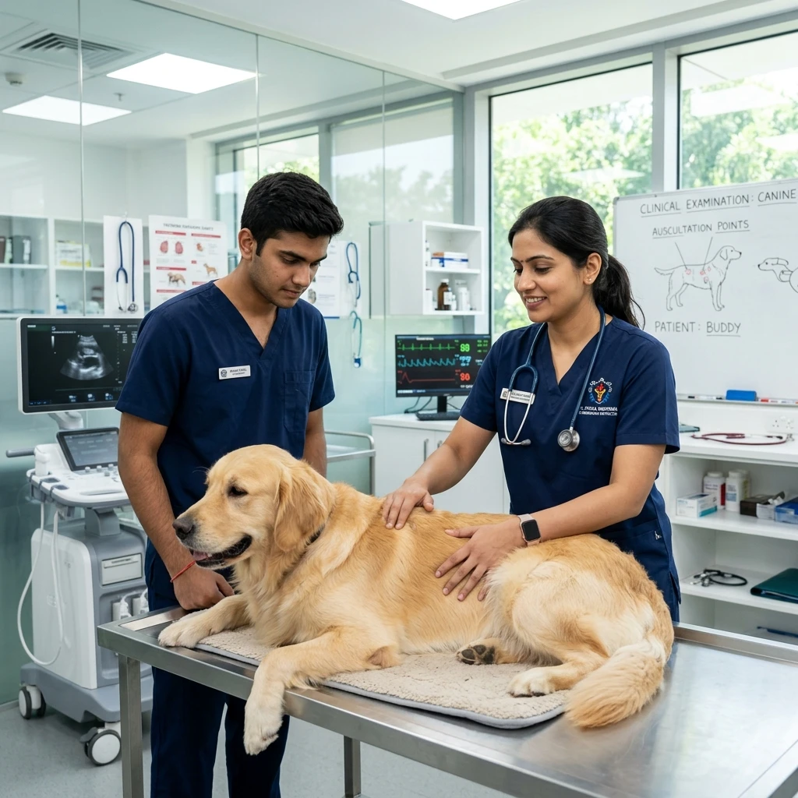

WHERE CLINICAL
CONFIDENCE
BECOMES
PRACTICE.
Build practical veterinary skills through specialist mentorship, real clinical exposure, and hands-on learning designed for confident practice.


From Medical Theory to Clinical Confidence.
University textbooks teach medical theory. VetNova builds the practical surgical reps, diagnostic reasoning, and specialist mentorship required to lead cases independently.
University Knowledge → Clinical Practice
Bridge the gap between academic exams and real-world hospital procedures.
Clinical Practice → Surgical Confidence
Perform tissue handling, suture patterns, and soft tissue procedures under 1-on-1 guidance.
Specialist Guidance → Career Readiness
Receive direct feedback from practicing MVSc specialists actively leading hospital departments.
Train for the Cases That Matter.
Specialist-led programs designed to turn veterinary knowledge into practical clinical capability.
 FLAGSHIP CLINICAL TRACK • 4 WEEKS
FLAGSHIP CLINICAL TRACK • 4 WEEKS
Veterinary Skill-Up Program
Our flagship 4-week clinical mastery module combining soft tissue surgery, digital X-ray interpretation, abdominal FAST ultrasound scanning, and emergency ICU triage.

Soft Tissue Surgery Track
Intensive hands-on workshop covering sterile OR setup, tissue handling, and suture patterns.
View Program
Radiology & Ultrasound
Digital radiograph reading alongside hands-on abdominal FAST ultrasound scanning.
View Program
Pet Emergency & ICU Care
Handling shock, toxic ingestion, cardiac arrest, fluid resuscitation, and triage.
View Program
Veterinary Skill-Up Program
Our 4-week flagship practical module engineered for veterinary graduates and practitioners seeking surgical autonomy and diagnostic confidence.
What Makes VetNova Different?
Six structural pillars that set VetNova clinical training apart from conventional academic lectures.
Deep Medical Theory
Evidence-based anatomical, physiological, and surgical reasoning principles behind every procedural decision.
Clinical Observation
Direct observation and case analysis inside operating rooms with senior specialist mentors.
Hands-on Practice
Building surgical muscle memory through dry-lab instrument practice, knot tying, and sterile field protocols.
Specialist Mentorship
Continuous 1-on-1 guidance from practicing MVSc surgeons, radiologists, and clinicians throughout every module.
Real Clinical Exposure
Evaluating real patient records, radiograph artifacts, emergency vitals, and organ pathology scenarios.
Career Development
Curriculum specifically tailored to increase clinical confidence, employability, and referral hospital placement readiness.
Your Clinical Learning Journey
A structured progressive pipeline moving you from academic learner to confident independent clinician.
Case-Based Surgical & Diagnostic Foundations
Evaluate patient history records, radiograph artifacts, organ landmark algorithms, and pre-op fluid requirements prior to stepping into operating suites.
- Surgical anatomy & organ landmark identification
- Emergency fluid rate calculations & toxic shock algorithms
- Pre-operative patient stabilization & blood work analysis

Learn Where Real Clinical Decisions Happen.
Step directly into live hospital operating rooms and diagnostic labs to perform critical procedures under specialist supervision.
Learn From Practitioners Who Lead From the Front.
Our faculty consists of practicing MVSc specialists with active surgical and diagnostic clinical practices.

Dr. Amit Kulkarni
BVSc & AH, MVSc (Surgery)Soft Tissue Surgery & Wound Management Specialist.
12+ Years Clinical Exp
Dr. Priya Sharma
BVSc & AH, MVSc (Radiology)Diagnostic Radiology & Abdominal Ultrasound Trainer.
10+ Years Clinical Exp
Dr. Rajesh Verma
BVSc & AH, MVSc (Medicine)Emergency & Critical Pet Care Specialist.
14+ Years Clinical Exp
Dr. Sneha Nair
BVSc & AH, PgDip (Dermatology)Feline Clinical Practice & Dermatology Instructor.
9+ Years Clinical ExpWorld-Class Clinical Infrastructure
A dedicated 3,000 sq. ft. learning centre located in Wagholi, Pune, equipped for multi-specialty workflows.


Build Confidence Across Real Clinical Procedures.
Select a clinical domain below to explore specific practical skills trained during VetNova programs.
Soft Tissue Abdominal Incisions
Standard laparotomy techniques, organ localization, and sterile abdominal cavity exposure.
Suture Techniques & Knot Tying
Mastering continuous, interrupted, and subcuticular closure patterns with surgical precision.
Spay & Neuter Protocols
Standardized ovariohysterectomy and castration procedural workflows with minimal trauma.
Train for the Career You Want.
Our practical curriculum is structured to open immediate professional doors in multispecialty hospitals.
PRACTICAL TRAINING
1-on-1 specialist mentorship in operating suites with live cases.
CLINICAL SKILLS
Procedural autonomy across soft tissue surgery, FAST scans, and ICU triage.
CONFIDENCE
Master surgical decision-making and independent case execution.
CAREER ADVANCEMENT
Access referral hospital partner networks and placement guidance.
Connected to the Veterinary Ecosystem.
From Theory to Clinical Confidence.
See how VetNova specialist mentorship bridges the gap between academic textbooks and real surgical practice.
University Theory
Academic classroom foundation without live procedural execution.
- Textbook knowledge without live surgical reps
- Hesitation during emergency triage & fluid dosing
- Uncertainty when reading abdominal ultrasound FAST scans
- Dependence on senior assistance for routine soft tissue cases
Clinical Autonomy
Specialist mentorship, live surgical reps, and diagnostic mastery.
- Independent soft tissue surgical confidence
- Rapid emergency decision-making & ICU resuscitation
- Systematic abdominal FAST ultrasound probe positioning
- Documented surgical case log & referral hospital placement
Trusted by Veterinary Professionals.
Hear how veterinarians built practical surgical confidence through VetNova training.
"The 4-Week Skill-Up program completely transformed my surgical confidence. I went from assisting to performing soft tissue procedures independently within weeks. The 1-on-1 MVSc mentor guidance in live operating suites was invaluable."

"1-on-1 mentorship in live operating suites gave me the exact tactile reps I missed during my university internship."
"The FAST ultrasound and digital radiology modules were extremely practical. I now interpret abdominal scans with total clarity."

See Clinical Learning in Action.
Learning Centre Articles
Insights, surgical protocols, and diagnostic guides published by VetNova specialist faculty.
Questions? We Have Answers.
Find answers to common questions about eligibility, batch size limits, surgical hands-on time, and Pune campus facilities.
Programs are designed for BVSc & AH graduates, MVSc postgraduates, registered veterinary practitioners, final-year veterinary interns, and certified veterinary nursing assistants.
To guarantee 1-on-1 mentor guidance in operating suites, batch sizes are capped strictly at 4 participants per session.
Yes. After completing sterile scrub and instrument dry-lab assessments, trainees assist and perform soft tissue surgeries under 1-on-1 MVSc specialist supervision.
Our practical training facility is located at Gawadewadi, Wagholi, Pune, Maharashtra 412207, equipped with modern OT, radiology, and ICU infrastructure.
Ready to Build Your Clinical Confidence?
Train with specialists. Practice real procedures. Prepare for the cases that matter.
Get in Touch with VetNova
Have questions about program schedules, batch intake dates, or clinical prerequisites? Our academic team is here to assist.
Gawadewadi – Wagholi, Pune, Maharashtra 412207
+91 20 1234 5678 / +91 99999 99999
hello@vetnova.in